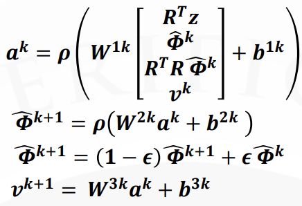
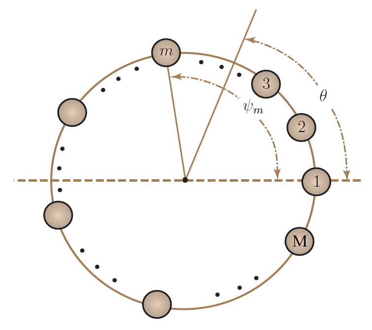
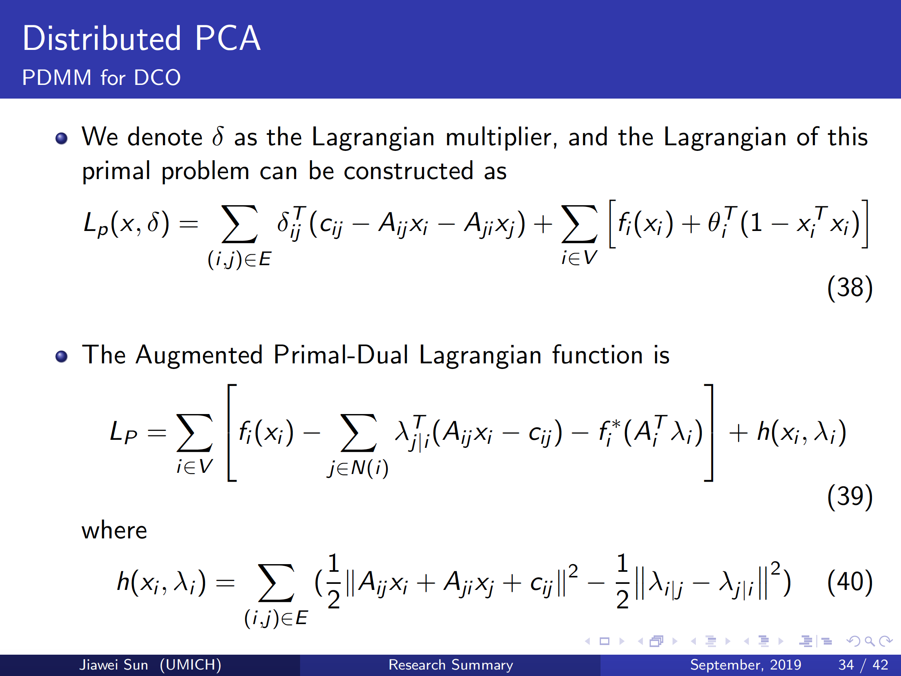

Image Processing to decipher C. elegans locomotion in mazes
 |
Cooperate with Research Scientist Eleni Gourgou and Master Zongyu Li Our goal of the research is to find the motion trails of the elegans. However in the videos, the elegans creep in a Trapezoidal maze (T-maze Fig.A) and due to the camera refocusing and unpredictable noise, only using frame difference method cannot find stable and correct motion trails. To solve this problem, first, the Chan-Vese active contour method and SVD are used to extract contours of T-maze (Fig.B red line). Second, I create a T-shape polygon. By the Procrustes Transformation method, the polygon is rotated and shifted to have maximal overlap with the extracted contour (Fig.C), which can be written as
where T denotes the contour of T-maze, P denotes the T-shape polygon, Q is an unknown unitary rotating matrix and d is an unknown displacement vector. Third, I only focus the pixels inside the T-shape polygon and apply the Frame Difference method to find motion trails of the elegans. Finally, I use the the K-Nearest Neighbor (KNN) algorithm to smooth the motion trails (Fig.D, red line: the final trail, green line: trails using the Frame Difference method directly). Publication (submitted):
MATLAB Code: Github Video Presentation: YouTube |

Deep Neural Network for Spectrum Unfolding
|  |
Cooperate with Ph.D Haonan Zhu, Prof Alfred Hero Our goal of the research is to proposed the left architecture that mimics project gradient descent method from optimization theory. where k=1,2,...,L denotes the layer number (analogous to number of iteration
of projected gradient descent), I completed the Recurrent Neural Network code with the help of Haonan and under the supervision of Prof Hero. |
Differential Microphones Arrays based on Differential Equation
|  |
Advisor: Prof Jie Chen, Prof Lijun Zhang The beampatterns of circular Differential Microphone Arrays (CDMA) and linear Differential Microphone Arrays (LDMA) are polynomial of sinusoidal function. Classical method of designing beampattern is solving simultaneous equations formed from constrains on the nulls. I prove that the polynomial of sinusoidal function is the solution of a differential equation and the differential equation corresponding to LDMA and CDMA are same. When changing the initial values of the differential equation properly, the solution of the differential equation can be beampatterns of LDMA or beampatterns of CDMA. Therefore, one differential equation can represent two kinds of geometry arrays. Report of the provement: Github PPT of the short summary: Github |
Distributed PCA by the Primal-Dual Method of Multipliers (PDMM)
|  |
Advisor: Prof Jie Chen Distributed PCA method can be obtained by simply approximating the global correlation matrix via the Average Consensus (AC) Algorithm, so matrices are divided in columns. Eigenvalue decomposition of correlation matrix and reduce its dimension to p-dim by PDMM algorithm. Programming in Matlab to accomplish Distributed PCA. PPT of the short summary: Github |